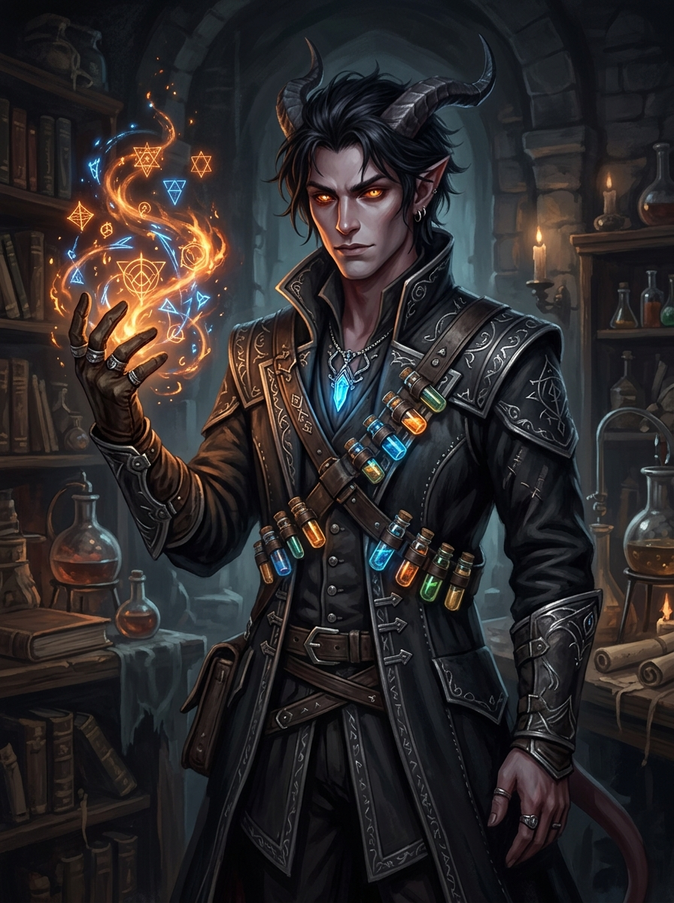

🜍 Grimório & Dossiê Interativo
LENTE ATIVA: MÁSCARA DO EGO (A DESCULPA RACIONAL)
Soren Vaelor Alkahest
Tiefling Artificial (Quimera de Três Almas) • Mago • Aprendiz Arcano • Alquimista
Círculo de Transmutação
Clique em um Nó
Todos os elementos da história orbitam e alimentam a existência de Soren Alkahest.

DENSIDADE ANÍMICA
88%
Tríplice Fundida (1 Alma Genial + 2 Almas Sacrificadas)
Ex-Casta do Mercúrio
Alkahest
Soren Vaelor Alkahest
O Protagonista • A Quimera de Três Almas
🔗 Papel na Trajetória de Soren
🜍 O que Soren diz ao mundo (A Desculpa Racional):